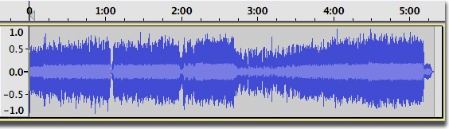
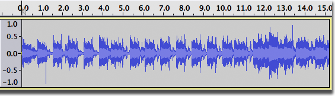
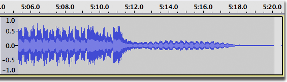
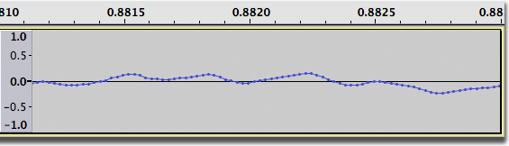
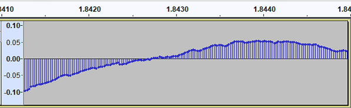

Zooming Overview
Contents
Zoom levels
- 
The figure above shows Audacity's view of an entire song, zoomed all the way out. It's really useful to get an idea of the whole piece from start to finish, but it's hard to see much detail - like a forest with no individual trees.
Zooming the time scale, or zooming "horizontally", is something you'll do all the time. It lets you focus on the first 15 seconds, for example:
- 
or the last 15 seconds:
- 
or even a tiny fraction of a second, where you can see the individual audio samples as small dots:
- 
Time Scale Zooming (Horizontally)
There are five ways to zoom horizontally:
Menu Commands
submenu: use the four commands in this submenu to:
- : double the current zoom level.
- : reverts back to Audacity's default zoom, where you can see 5 - 10 seconds at a time
- : cuts the current zoom level in half
- : zooms and scroll so that the selection just fits in the window
- : toggles between two pre-defined zoom levels, these are user selectable in Tracks Preferences. Defaults are normal Default Zoom level and 4 Pixels per Sample (which shows a fraction of a second of audio as samples)
- submenu: use the first two commands in this submenu to;
- : zoom out just enough so that you can see the entire project
- : resize all the tracks so they fit in the window vertically without scrolling. If you have more than about ten tracks, some scrolling up and down will still be needed, because there is a minimum track height beyond which reduction is impossible.
Edit Toolbar
Five of the view commands have equivalent buttons on the right of the Edit Toolbar:

-
 Zoom In
Zoom In -
 Zoom Out
Zoom Out -
 Fit Selection (to Width of the Window). aka 'Zoom to Selection'
Fit Selection (to Width of the Window). aka 'Zoom to Selection' -
 Fit Project (to Width of the Window).
Fit Project (to Width of the Window). -
 Zooms between two preset levels. These can be set using Tracks preferences.
Zooms between two preset levels. These can be set using Tracks preferences.
'Fit Project to Height' and 'Zoom Normal' are not provided as buttons on the Edit Toolbar.
Keyboard shortcuts
All zoom commands have keyboard shortcut equivalents:
| Zoom action | Keyboard shortcut |
|---|---|
| Zoom In | Ctrl + 1 |
| Zoom Normal | Ctrl + 2 |
| Zoom Out | Ctrl + 3 |
| Zoom Toggle | Shift + Z |
| Fit Project to Width | Ctrl + F |
| Fit Project to Height | Ctrl + Shift + F |
| Zoom to Selection | Ctrl + E |
Mac users: Use ⌘ instead of Ctrl.
Zoom Tool
You can also zoom in and out using the  Zoom Tool.
Zoom Tool.
Zoom In or Out using the mouse wheel
If your mouse has a scroll wheel or ball, you can zoom in or out focused on the selection's left or right edge by placing the mouse pointer left of the selection or right of the selection, respectively. If the mouse pointer is inside the selection, or if there is no selection, zoom is focused on the mouse pointer position.
Hold down the Ctrl key on your keyboard then scroll up to zoom in, or scroll down to zoom out. For example. you can zoom in at or near the start or end of a selection by placing your cursor position there.
When Scrubbing or Seeking, the zoom buttons in Edit Toolbar and the zoom items in View Menu (or their shortcuts) zoom at the mouse pointer and not at the selection or editing cursor.
To zoom the waveform in Audacity without using the Ctrl key, look in these places, depending on which version of macOS/Mac OS X you are using:
- in the System "Mouse" Preferences (in older versions of Mac OS X before the Magic Mouse), disable "Zoom using scroll ball while holding Command" (or similar).
- in the System "Universal Access" Preferences, the "Seeing" tab, then in the "Zoom" section click the "Options" button - uncheck "Use scroll wheel with modifier keys to zoom"
- in the System "Accessibility" Preferences, click on "Zoom" in the left panel, then uncheck "Use scroll gesture with modifier keys to zoom".
Vertical Zooming
Occasionally you may want to zoom vertically, so that you see only a portion of the waveform from top to bottom, but in greater detail.
Vertical Scale
Right-click in the Vertical Scale will bring up the dropdown context menu.

All the zooms here are in the vertical direction, as opposed to a horizontal zoom on the Timeline - For details of using the context menu (Simple mode) to control vertical zooming see this section of the Vertical Zooming page.
- For advanced details of vertical zooming using the Vertical Scale magnifiers please see this section of the Vertical Zooming page.
- After 3 repetitions of zooming in with Vertical Zooming this waveform shows good vertical detail
- 